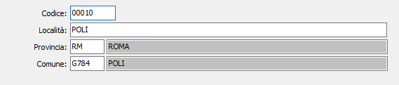

Codici avviamento postale
La tabella di configurazione consente di memorizzare i Codici di avviamento postale dei vari comuni italiani, ai fini del controllo di congruenza fra Cap e Località inseriti nelle anagrafiche clienti, fornitori e destinazioni diverse.
La tabella viene precaricata in sede di installazione procedure completa di tutti i comuni italiani. Non sono invece presenti i CAP di zona dei comuni di grandi dimensioni (Roma, Milano, Napoli, Torino, ecc) che, all’occorrenza, possono essere inseriti dall’utente.

CODICE: codice di avviamento postale, alfanumerico di 10 caratteri, che contraddistingue la località in esame. Sul campo sono attive le funzioni di ricerca sulla tabella stessa. È ammessa la duplicazione del codice, perché esistono comuni che hanno lo stesso CAP.
LOCALITÀ: campo alfanumerico di 30 caratteri per contenere la descrizione della località in esame.
PROVINCIA: codice alfanumerico di 2 caratteri, presente nella tabella Province per indicare la provincia a cui appartiene la località in esame. Sul campo sono attive le funzioni di ricerca sulla tabella stessa
COMUNE: descrizione alfanumerica del comune, presente nella tabella CAP, significativa nel caso di comuni di grandi dimensioni che sono ripartiti su più numeri di CAP. Sul campo sono attive funzioni di ricerca sulla tabella stessa.